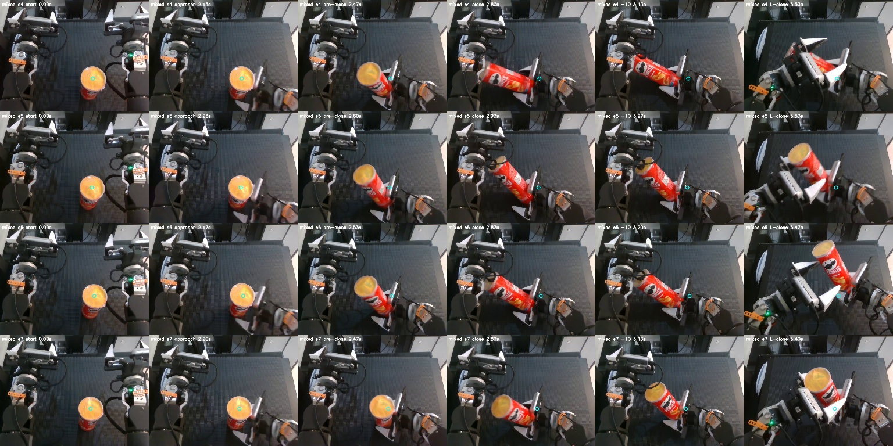
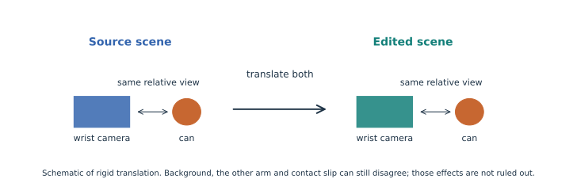
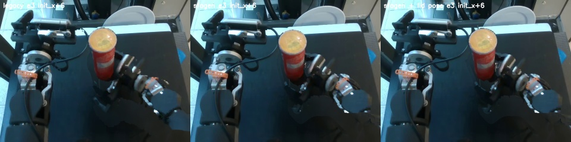

The reported gain is concentrated in harder positions.
Real-only succeeded in 10/20 trials; the mixed policy succeeded in 15/20. Positions 4 and 5 already had perfect reported scores; the added successes were in positions 1–3.
Real-only policy Real + v00 policy. These colours apply to policy comparisons below.
How to read the intervals
The horizontal lines are exact binomial 95% confidence intervals. Four or five attempts per position cannot tightly estimate a true success rate. Overlapping intervals are not a standalone statistical test; the reported overall Fisher test is also not a causal test because training exposure and placements differ.
The rear starts remain near the edge of training coverage.
Adding v00 brings the nearest training start from roughly 5–6 cm to 2–3 cm away in the rear groups. That helps coverage, but 13 of the 14 rear evaluation starts remain outside the real+v00 convex hull.
Coordinate accuracy and proxy limits
The maps use calibrated camera back-projection and a common lid plane at z = 42.97 cm, not surveyed placements. The ±5 px / ±1 cm lid-height sensitivity test changes x/y by up to 0.61–1.19 cm across these trials; this is not a calibrated confidence interval. v01 uses fitted object poses plus published shifts. The close-location offset is estimated from ten source demos. Rotating that offset with the gripper changes magnitudes but preserves the rear error direction.
The can begins moving while the gripper is still approaching.
Look at the recorded behaviour
Choose a position and a policy to inspect every trial in that group. Each row shows start, approach, pre-close, close, ten frames later, and receiver close. These are evidence frames, not per-trial success annotations.

Per-trial measurements for the selected group
| Episode | Close (s) | Image motion before close (s) | Approach → close (s) | Close-location proxy (cm) |
|---|
“Unknown” means the event was missing or outside the registered approach criterion; it never means a zero delay. Closing around the can can also prevent the measured finger state from crossing the command threshold.
The camera and can translate together near the grasp.
The camera moves about 3 cm in the object-position variants. Yet the modelled can view shifts only about 0.077 px at grasp, because their relative geometry barely changes.

What was verified
Nine mapped source/synthetic RGB pairs look identical apart from codec differences (39.5–43.0 dB). The right wrist is flagged invalid in 59.8% of synthetic frames. The geometric audit covers 46 can-position variants and uses source-cluster confidence intervals.
Inspect all 9 RGB copy checks →
What remains unknown
Copied table/background and opposite-arm images, blend/rejoin effects, slip and tilt may matter. The calculation uses calibrated proxy geometry and rigid attachment after close+8. It is not an image-quality verdict or a trained-policy ablation.
v01 changed duration and shift size; the pose fix did not establish a gain.
Compare the same source, target joints and 6 cm shift
Left: legacy. Middle: sfagen. Right: sfagen with legacy lid pose. These synthetic examples have no target RGB ground truth; they illustrate visible artifacts rather than proving a winner.

What the renderer comparison does and does not isolate
The test uses 360 scenes: one central frame at four phases for all 90 ordered pairs of ten demos. These are reused development recordings, not a fresh untouched evaluation. The original 1,080-frame R1 gate is unchanged. Legacy versus sfagen also differs in masks, calibration and video/state lag. The pose substitution holds the sfagen components fixed while replacing source and target can poses; it does not establish a useful improvement.
Numerical summary · All 360 scene scores · Cross-episode real/reference comparisons, 1–5 · 6–10


Prioritise coverage and fixed duration; keep wrist causality open.
The smallest next step supported by this diagnosis
- Place targets around the measured rear starts. More synthetic episodes alone did not produce even coverage.
- Keep fixed-duration trajectories and smaller shifts. Preserve negative or rejected cases rather than slowing them invisibly.
- Keep wrist rendering as a controlled comparison. Do not claim it has already explained or solved late closure.
- Match training exposure and randomise evaluation placements. A new policy study needs comparable batch/sample exposure and explicit outcomes.
Step 2 generation has not started. This report changes presentation only; it does not rerun an experiment, train a policy or operate the robot.
Evidence, exact revisions and reproducibility
All 130 synthetic state/action hashes match provenance. All 40 body episodes were decoded; 40 trial rows, 9 RGB copy checks, 10 matched cross-episode sheets and 14 matched shift examples were visually inspected in the diagnostic work. The original diagnostic suite passed 43 CPU tests.
| Input | Repository | Exact commit |
|---|
Full diagnosis and experiment reproduction · Frozen protocol · 40-trial CSV · Rollout measurements · Coverage data · Wrist audit · Input/code provenance · Visual-build provenance
Rebuild this visual report from existing saved evidence, without network or GPU:
env -u PYTHONPATH -u LD_LIBRARY_PATH .venv/bin/python -B research/sim_free_augmentation/sfagen/tools/visualize_eval_v00.py